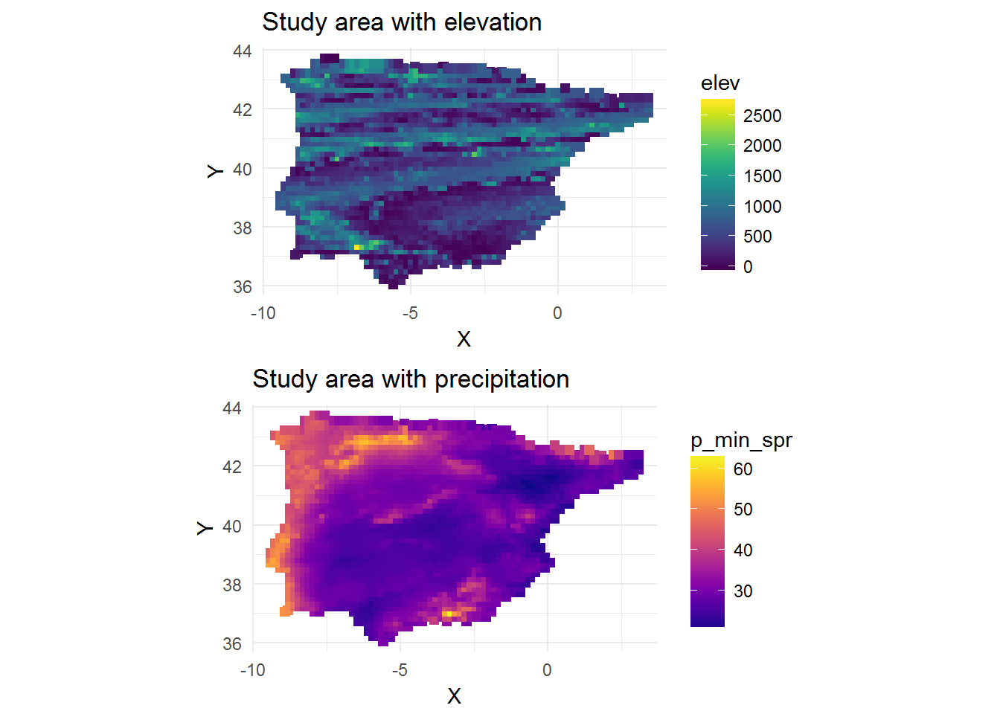
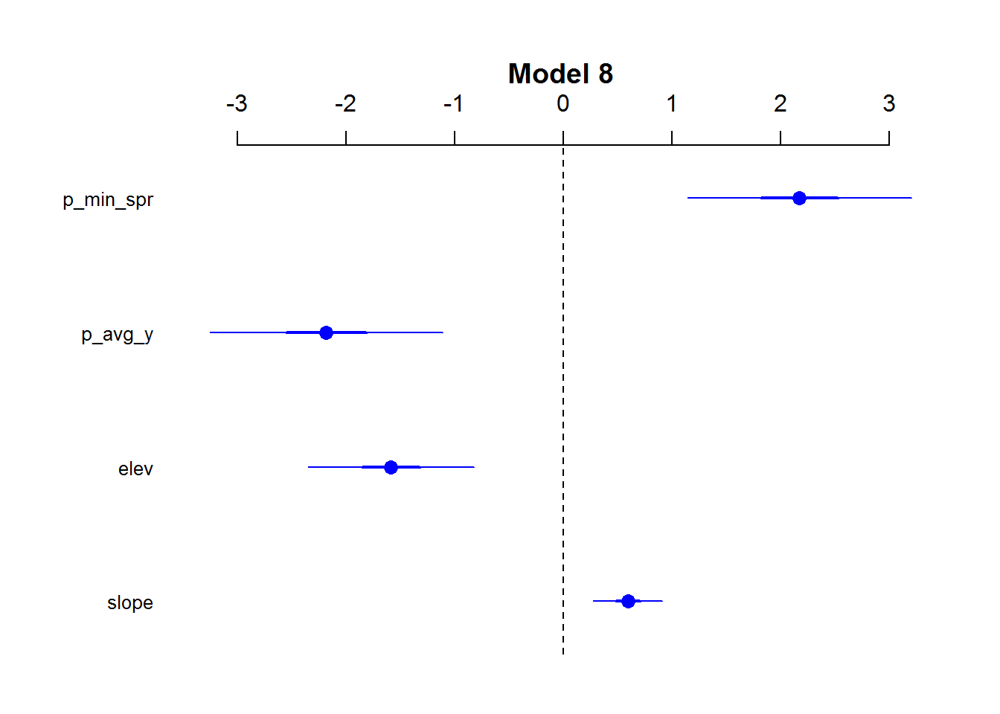

Chapter 7 Using R to analyse occupation as a function of geographical variables using logistic regression.
Ariane Burke
7.1 Introduction
This demonstration is based on research published in:
Burke, Ariane, et al. 2014 Exploring the impact of climate variability during the Last Glacial Maximum on the pattern of human occupation of Iberia. Journal of Human Evolution 73:35-46. http://dx.doi.org/10.1016/j.jhevol.2014.06.003
## ----- Install packages
require(car) ## for vif (variance inflation test)
# BM # we can install coefplot2 from:
# devtools::install_github("palday/coefplot2", subdir = "pkg") # or
# install.packages("coefplot2",repos="http://www.math.mcmaster.ca/bolker/R", type="source")
require(AICcmodavg) ## for AIC model selection
require(MASS) ## for stepAIC
library(coefplot2) ## for coefficient plot.## Set file name
fileName <- "Test_Iberia.csv"
## ----- Read in data
dat <- read.csv(fileName, header=T)
## ----- View/check data
head(dat)## Name LGM X Y t_avg_y t_min_y slope elev p_avg_y
## 1 Abauntz 1 -1.6333 43.0015 3.82 -8.2 8.27 241 64.13
## 2 Aitzbitarte IV 1 -1.8956 43.2628 6.05 -6.2 3.37 493 50.40
## 3 Altamira 1 -4.1190 43.3780 6.30 -5.1 8.06 92 59.89
## 4 Amalda 1 -2.2047 43.2342 5.31 -6.6 26.16 112 60.40
## 5 Ambrosio 1 -2.0991 37.8222 8.88 -3.1 7.25 85 61.86
## 6 Arbreda 1 2.7468 42.1618 7.58 -5.4 4.31 83 55.08
## p_min_spr
## 1 30.34
## 2 24.92
## 3 31.76
## 4 29.76
## 5 34.24
## 6 27.64library(ggplot2)
library(viridis)
map_elev <-
ggplot(dat,
aes(X,
Y,
colour = elev)) +
geom_point(size = 2,
shape = 15) +
scale_color_viridis() +
theme_minimal() +
coord_equal() +
ggtitle("Study area with elevation")
map_precip <-
ggplot(dat,
aes(X,
Y,
colour = p_min_spr)) +
geom_point(size = 2,
shape = 15) +
scale_color_viridis(option = "C") +
theme_minimal() +
coord_equal() +
ggtitle("Study area with precipitation")
library(gridExtra)
grid.arrange(map_elev, map_precip)
### ----- Standardization of predictors
dat1 <- as.data.frame(cbind(dat[,c(1:4)], (scale(dat[,-c(1:4)]))))
#dat2<- dat2[,] ## removal of extra non informative variables
# Verification (make sure the vars are numerical)
str(dat1)## 'data.frame': 2214 obs. of 10 variables:
## $ Name : Factor w/ 2214 levels "1","10","100",..: 2180 2181 2182 2183 2184 2185 2186 2187 2188 2189 ...
## $ LGM : int 1 1 1 1 1 1 1 1 1 1 ...
## $ X : num -1.63 -1.9 -4.12 -2.2 -2.1 ...
## $ Y : num 43 43.3 43.4 43.2 37.8 ...
## $ t_avg_y : num -1.136 -0.307 -0.214 -0.582 0.746 ...
## $ t_min_y : num -1.195 -0.58 -0.242 -0.703 0.372 ...
## $ slope : num 0.484 -0.351 0.448 3.532 0.31 ...
## $ elev : num -0.85 -0.206 -1.231 -1.18 -1.249 ...
## $ p_avg_y : num 0.1113 -1.0793 -0.2564 -0.2122 -0.0856 ...
## $ p_min_spr: num -0.178 -0.9476 0.0237 -0.2603 0.3758 ...Using all of the data including the zeros, which cannot be described as necessarily “true” zeroes, we introduce an artificial level of certainty regarding absences. This can bias results (King and Zeng, 2000; Dixon et al.,2005), (also see http://www2.unil.ch/biomapper/Download/Chefaoui-EcoMod-2008.pdf)
To reduce this uncertainy, we sample the zeros which we now call pseudo absences. Good practice is 10x the number of presences (=1000). We can bootstrap this if we want, but this 1000 samples should be sufficient. We will nonetheless need to report some sensitivity to the number of absences used.
## ----- Tease apart presences and absences, then select a subset of absences - recombine presences (all) and absences (sample)
numAbsences <- 350 ## 10x presences
Presences <- subset(dat1, dat1$LGM == 1)
Absences <- subset(dat1, dat1$LGM == 0)[sample(c(1:dim(dat1)[1]), numAbsences),]
## ----- Final data on which analyses will be run
dat2 <- rbind(Presences, Absences)
## ----- data table for forward selection (stepAIC)
dat3 <- dat2[,c(2, 5, 6, 7, 8, 9, 10)]
## ----- View/check data
head(dat3)## LGM t_avg_y t_min_y slope elev p_avg_y p_min_spr
## 1 1 -1.1364478 -1.1949906 0.4840559 -0.8504833 0.11126454 -0.17797971
## 2 1 -0.3069777 -0.5803098 -0.3508109 -0.2063003 -1.07927238 -0.94763063
## 3 1 -0.2139877 -0.2422353 0.4482759 -1.2313694 -0.25638852 0.02366315
## 4 1 -0.5822278 -0.7032459 3.5321719 -1.1802437 -0.21216610 -0.26034088
## 5 1 0.7456684 0.3724455 0.3102673 -1.2492633 -0.08556859 0.37582815
## 6 1 0.2621207 -0.3344375 -0.1906528 -1.2543759 -0.67346664 -0.56138515## ----- MODELLING
## ----- Define formulae
form0 <- formula(LGM ~ 1) #intercept only model
form1 <- formula(LGM ~ Y + X)
form2 <- formula(LGM ~ elev + slope)
form3 <- formula(LGM ~ t_min_y)
form4 <- formula(LGM ~ elev + slope + p_min_spr)
form5 <- formula(LGM ~ p_min_spr + t_min_y)
form6 <- formula(LGM ~ t_avg_y + p_avg_y)
form7 <- formula(LGM ~ elev + slope + t_avg_y + p_avg_y)
form8 <- formula(LGM~ .) ## all variables for step-wise procedure
## all variables for step-wise procedure## ----- Build models
mod.0 <- glm(form0, family = binomial, data = dat2)
mod.1 <- glm(form1, family = binomial, data = dat2)
mod.2 <- glm(form2, family = binomial, data = dat2)
mod.3 <- glm(form3, family = binomial, data = dat2)
mod.4 <- glm(form4, family = binomial, data = dat2)
mod.5 <- glm(form5, family = binomial, data = dat2)
mod.6 <- glm(form6, family = binomial, data = dat2)
mod.7 <- glm(form7, family = binomial, data = dat2)
mod.8 <- stepAIC(glm(form8, family = binomial, data = dat3))## Start: AIC=183.98
## LGM ~ t_avg_y + t_min_y + slope + elev + p_avg_y + p_min_spr
##
## Df Deviance AIC
## - t_min_y 1 170.06 182.06
## - t_avg_y 1 170.14 182.14
## <none> 169.98 183.98
## - slope 1 182.22 194.22
## - p_avg_y 1 185.86 197.86
## - p_min_spr 1 188.61 200.61
## - elev 1 196.79 208.79
##
## Step: AIC=182.06
## LGM ~ t_avg_y + slope + elev + p_avg_y + p_min_spr
##
## Df Deviance AIC
## - t_avg_y 1 170.28 180.28
## <none> 170.06 182.06
## - slope 1 182.77 192.77
## - p_avg_y 1 188.09 198.09
## - p_min_spr 1 188.61 198.61
## - elev 1 196.97 206.97
##
## Step: AIC=180.28
## LGM ~ slope + elev + p_avg_y + p_min_spr
##
## Df Deviance AIC
## <none> 170.28 180.28
## - slope 1 183.47 191.47
## - p_min_spr 1 188.98 196.98
## - p_avg_y 1 189.04 197.04
## - elev 1 197.13 205.13## ----- Summarize AIC results, including weightings. Using modaicavg package.
mods <-
list(mod.0,
mod.1,
mod.2,
mod.3,
mod.4,
mod.5,
mod.6,
mod.7,
mod.8)
modnames <-
c("mod.0",
"mod.1",
"mod.2",
"mod.3",
"mod.4",
"mod.5",
"mod.6",
"mod.7",
"mod.8")
aictab(mods, modnames, second.ord = T)##
## Model selection based on AICc:
##
## K AICc Delta_AICc AICcWt Cum.Wt LL
## mod.8 5 180.45 0.00 1 1 -85.14
## mod.2 3 195.89 15.44 0 1 -94.91
## mod.4 4 197.14 16.70 0 1 -94.52
## mod.7 5 198.77 18.32 0 1 -94.30
## mod.1 3 224.91 44.46 0 1 -109.42
## mod.0 1 235.62 55.18 0 1 -116.81
## mod.3 2 237.28 56.84 0 1 -116.63
## mod.5 3 237.96 57.51 0 1 -115.95
## mod.6 3 238.49 58.05 0 1 -116.22summary(mod.8)##
## Call:
## glm(formula = LGM ~ slope + elev + p_avg_y + p_min_spr, family = binomial,
## data = dat3)
##
## Deviance Residuals:
## Min 1Q Median 3Q Max
## -1.16010 -0.43006 -0.19391 -0.08459 2.93785
##
## Coefficients:
## Estimate Std. Error z value Pr(>|z|)
## (Intercept) -3.7096 0.4344 -8.539 < 2e-16 ***
## slope 0.5945 0.1629 3.650 0.000262 ***
## elev -1.5847 0.3889 -4.075 4.61e-05 ***
## p_avg_y -2.1806 0.5455 -3.997 6.40e-05 ***
## p_min_spr 2.1741 0.5265 4.129 3.64e-05 ***
## ---
## Signif. codes: 0 '***' 0.001 '**' 0.01 '*' 0.05 '.' 0.1 ' ' 1
##
## (Dispersion parameter for binomial family taken to be 1)
##
## Null deviance: 233.61 on 379 degrees of freedom
## Residual deviance: 170.28 on 375 degrees of freedom
## (5 observations deleted due to missingness)
## AIC: 180.28
##
## Number of Fisher Scoring iterations: 7## ---- Coefficient Plot for model
coefplot2(mod.8,
main = "Model 8",
col = 'blue',
cex.pts = 1.3,
intercept = FALSE)
## ---- list coefficients
rownames(summary(mod.8)$coefficients)## [1] "(Intercept)" "slope" "elev" "p_avg_y" "p_min_spr"## ---- Odds ratios and 95% CI
ORs<- exp(cbind(OR = coef(mod.8), confint(mod.8)))[-1,] ## Intercept OR shouldn't be interpreted.
ORs## OR 2.5 % 97.5 %
## slope 1.8122110 1.31918128 2.5124546
## elev 0.2050168 0.08805340 0.4087784
## p_avg_y 0.1129699 0.03650038 0.3144093
## p_min_spr 8.7945029 3.23875000 26.0283675## ----- Assess variance inflation (>5 is not good)
vif(mod.8)## slope elev p_avg_y p_min_spr
## 1.164546 1.024544 8.822865 8.437776sessionInfo()## R version 3.3.3 (2017-03-06)
## Platform: x86_64-w64-mingw32/x64 (64-bit)
## Running under: Windows 7 x64 (build 7601) Service Pack 1
##
## locale:
## [1] LC_COLLATE=English_Australia.1252 LC_CTYPE=English_Australia.1252
## [3] LC_MONETARY=English_Australia.1252 LC_NUMERIC=C
## [5] LC_TIME=English_Australia.1252
##
## attached base packages:
## [1] methods stats graphics grDevices utils datasets base
##
## other attached packages:
## [1] gridExtra_2.2.1 viridis_0.4.0 viridisLite_0.2.0 ggplot2_2.2.1
## [5] coefplot2_0.1.3.2 coda_0.19-1 MASS_7.3-45 AICcmodavg_2.1-0
## [9] car_2.1-4
##
## loaded via a namespace (and not attached):
## [1] Rcpp_0.12.10 nloptr_1.0.4 plyr_1.8.4
## [4] tools_3.3.3 digest_0.6.12 lme4_1.1-12
## [7] tibble_1.2 gtable_0.2.0 evaluate_0.10
## [10] nlme_3.1-131 lattice_0.20-34 mgcv_1.8-17
## [13] Matrix_1.2-8 yaml_2.1.14 parallel_3.3.3
## [16] SparseM_1.76 stringr_1.2.0 knitr_1.15.17
## [19] raster_2.5-8 MatrixModels_0.4-1 stats4_3.3.3
## [22] rprojroot_1.2 grid_3.3.3 nnet_7.3-12
## [25] reshape_0.8.6 survival_2.40-1 VGAM_1.0-3
## [28] rmarkdown_1.4 bookdown_0.3.16 sp_1.2-4
## [31] minqa_1.2.4 magrittr_1.5 scales_0.4.1
## [34] backports_1.0.5 htmltools_0.3.5 splines_3.3.3
## [37] assertthat_0.1 pbkrtest_0.4-7 unmarked_0.11-0
## [40] colorspace_1.3-2 xtable_1.8-2 labeling_0.3
## [43] quantreg_5.29 stringi_1.1.3 lazyeval_0.2.0
## [46] munsell_0.4.3